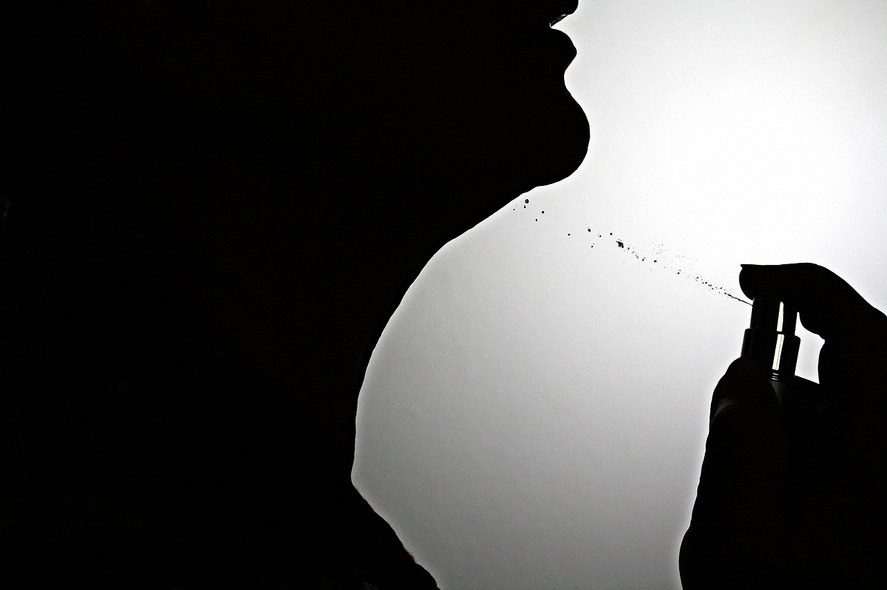

Tips And Hacks
Wearing perfume is an art, and with a few tips and hacks, you can take your fragrance game to the next level. Whether you want your scent to last longer, create a signature fragrance, or make the most of your perfume collection, this article provides valuable insights and practical advice. Discover the secrets to maximizing the impact of your perfume and leaving a lasting impression wherever you go.
Choose the Right Perfume for Different Occasions: Understanding the different types of perfumes can help you select the appropriate fragrance for any occasion. Eau de Parfum (EDP) offers a long-lasting scent and is perfect for special events, while Eau de Toilette (EDT) is lighter and suitable for daily use. Experiment with different perfume concentrations to find what works best for you.
Apply Perfume to Pulse Points: Applying perfume to pulse points enhances its projection and longevity. These areas include the wrists, behind the ears, on the neck, and the inside of the elbows. The warmth of these pulse points helps release the fragrance gradually throughout the day.
Layer Your Fragrances: Creating a unique scent can be achieved by layering different perfumes or complementary scented products. Start with a scented body wash or lotion, followed by a perfume that shares similar notes. This layering technique adds depth and complexity to your fragrance, making it more distinct.
Moisturize Before Applying Perfume: Dry skin tends to absorb and dull the scent of perfume quickly. To make your fragrance last longer, moisturize your skin with an unscented lotion before applying perfume. The moisturizer creates a barrier that slows down the evaporation of the fragrance, helping it stay on your skin for an extended period.

Store Perfume Properly: Perfume is sensitive to light, heat, and air exposure, which can alter its composition over time. To preserve its freshness and quality, store your perfumes in a cool, dark place away from direct sunlight. Additionally, keep the perfume bottles tightly closed to minimize air exposure and maintain their potency. Spritz Perfume on Hairbrushes and Clothing: To ensure a subtle and long-lasting fragrance, spritz your perfume on your hairbrush before running it through your hair. This technique allows the scent to diffuse gently throughout the day. You can also lightly spritz perfume on your clothing from a distance to add a delicate aroma that lingers.
Apply Perfume on a Moisturized Cotton Ball: If you prefer a more discreet fragrance, try applying perfume on a moisturized cotton ball or cotton pad. Lightly dab the scented cotton on your pulse points or tuck it into your clothing to enjoy a subtle scent without overwhelming those around you.
Refresh Your Fragrance with a Perfume Atomizer: Carrying a small perfume atomizer in your purse or pocket is a handy hack for refreshing your scent on the go. Fill the atomizer with your favorite perfume and spritz whenever needed, ensuring you always smell amazing throughout the day.
Use Perfume in Unconventional Ways: Expand your perfume's utility by incorporating it into various aspects of your routine. Spray a bit of your favorite fragrance on your bedsheets, closet, or even in your car to create a pleasant and personalized ambiance. Perfume can also be added to unscented body products, such as lotions or oils, to create a customized scented experience.